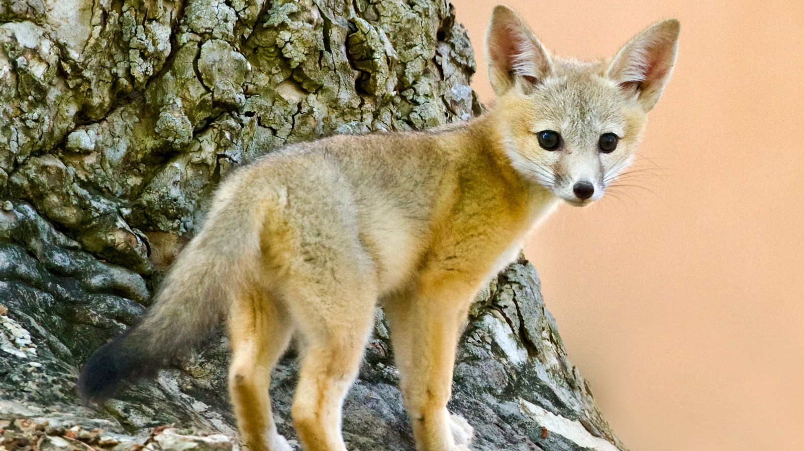
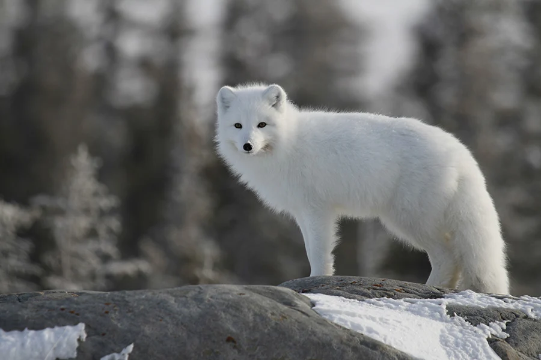
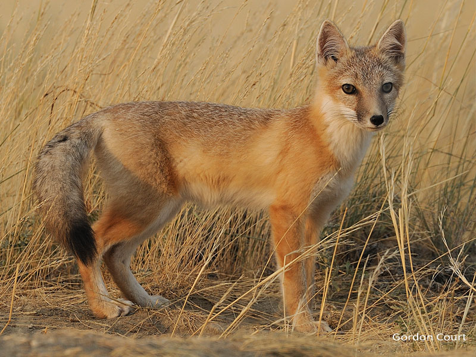
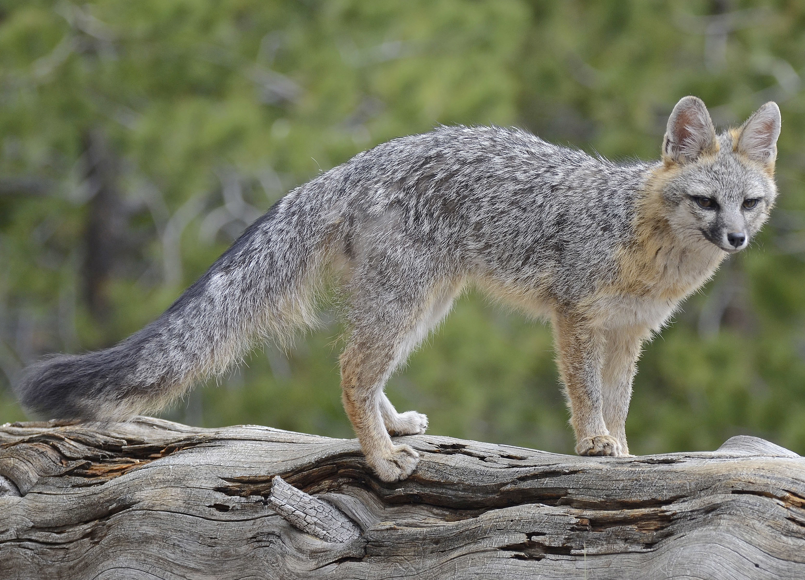
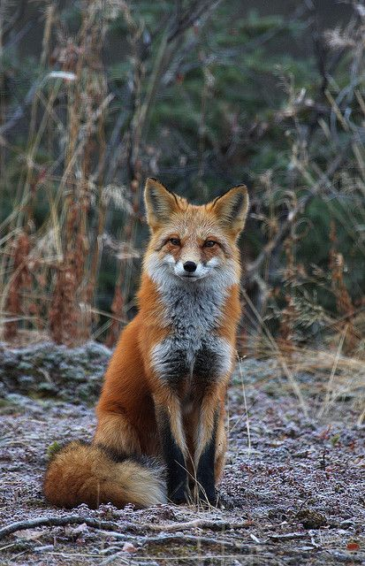
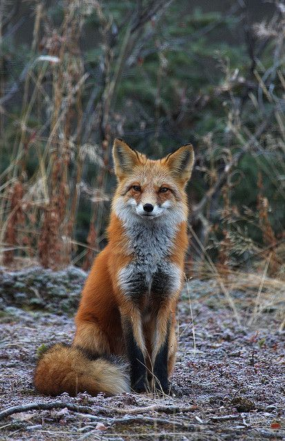

Vulpes is a genus of the subfamily Caninae. The members of this genus are colloquially referred to as true foxes, meaning they form a proper clade.
Foxes species
Red fox
The red fox is the largest of the true foxes and one of the most widely distributed members of the order Carnivora
Fennec fox
The fennec fox is a small fox native to the deserts of North Africa, ranging from Western Sahara and Mauritania to the Sinai Peninsula.

Kit fox
The kit fox is a fox species that inhabits arid and semi-arid regions of the southwestern United States and northern and central Mexico.

Arctic fox
The Arctic fox, also known as the white fox, polar fox, or snow fox, is a small species of fox native to the Arctic regions of the Northern Hemisphere and common throughout the Arctic tundra biome.

Swift fox
The swift fox is a small light orange-tan fox around the size of a domestic cat found in the western grasslands of North America.

Gray fox
Is an omnivorous mammal of the family Canidae, widespread throughout North America and Central America.


 
